Базовая конфигурация «Доверительное управление, редакция 2», версия 2.8.8.2. Расширение IMDEV9458_EmptyTurnover, версия 1.0.0.11. Контур UAT, период 2026, УК АО ВИМ Инвестиции.
1. Введение
Вендору Аванкор передаём точечный влив в типовую обработку «Формирование начислений НДФЛ»: два отбора на заполнении, повтор записи при коллизии номера и устойчивый повтор запроса оборотов. Расчёт налога и состав документов начисления не меняются - меняется только список пар клиент + УК после «Заполнить». Референс - расширение IMDEV9458_EmptyTurnover версии 1.0.0.11 на базовой 2.8.8.2; после приёмки расширение снимаем.
На форме два флажка, оба по умолчанию выключены. Можно включить по одному или вместе: сначала пул, затем доход.
Только клиенты с доходамиТолько клиенты выбранного пула
Что просим перенести в типовую
1
Отбор по доходам на счетах 90 и 91
Флажок и поле счетов справа. Умолчание: 90.01, 91.01, 91.03. После заполнения остаются пары, у которых за период есть обороты по этим счетам. Субсчета подхватываются сами, 91.02 доходом не считается.
Проверено, прогоны 7 и 8
2
Доход ПИФ не отсекать
Если по счетам оборотов нет, но в регистре сведений о доходах НДФЛ есть сумма из сторонней системы (не «своя» ДУ), пара остаётся. Так в заполнение попадают клиенты, у которых доход пришёл из ПИФ.
Проверено, Львов и Баландин в прогоне 9
3
Отбор по пулу: РДУ и не-РДУ
Флажок и поле пула. «Розничное ДУ» - клиенты РДУ. Пустое поле - не-РДУ (портфель без пула). Смотрим реквизит портфеля «Пул», не номер договора. Зерно - пара клиент + УК: достаточно одного портфеля с выбранным пулом.
Проверено, прогоны 10 и 11
4
Коллизия номера документа УК
При записи «Начисление НДФЛ по УК» повторять N раз: сначала текущий номер, затем новый. Иначе пачка падает с «значение поля Номер не уникально».
Проверено, дефект в прогоне 7, повтор 8 без ошибок
5
Повтор запроса оборотов по портфелю
В «ОбщиеОбороты» документа по портфелю не создавать явный менеджер временных таблиц. Иначе после блокировки СУБД повтор пакета падает: «временная таблица уже существует». Сделано: прогон 11 шёл уже без явного МВТ.
Проверено, прогон 11 без явного МВТ, ошибок 0
Итог ИТ-прогонов.Задачи 1-5 на контуре подтверждены. Эталон - прогон 9 (полный набор с доходами и ПИФ). Прогоны 10 и 11 - срезы того же расчёта: пустой пул и «Розничное ДУ». Прогон 11 шёл уже без явного МВТ в «ОбщиеОбороты». Живые документы РДУ совпали с эталоном по составу портфелей и суммам. Пять смешанных пар попали в оба пула - так устроено зерно «клиент + УК».
2. Технология
Тесты выполнялись в тонком клиенте 1С на контуре AVC_UAT_RFIN_PERFTEST, базовая конфигурация 2.8.8.2, расширение IMDEV9458_EmptyTurnover 1.0.0.11, платформа 8.3.27.2214. Обработка открывалась из интерфейса, заполнение и создание документов - кнопками формы, проведение пачками фоновых заданий. После каждого прогона выгружались лог формирования, сообщения, документы «по УК» и «по портфелю». Сверка - по полному набору портфелей в табличной части, не по номеру документа (номера ПИФ у разных клиентов совпадают).
Период: 01.01.2026 - 31.12.2026, налоговый период 2026.
УК: АО ВИМ Инвестиции. Схема выплаты: все схемы.
Закрытые портфели: включены (в том числе с поступившим НКД).
Пустой документ при сверке: доход = 0 и к удержанию = 0.
Схема прогонов
3. Статистика
27 157
УК, эталон (прогон 9)
2 164
УК, не-РДУ (прогон 10)
22 457
УК, РДУ (прогон 11)
0
Ошибок в логах 8-11
Длительность создания документов
По логам формы (мин:сек) и пометкам плана. Прогон 7 с ошибкой уникальности номера в пачке 11.
7 без дох.
302:24 / 4 ч 40
7 хвост
6:21 / 408 кл.
8 без дох.
317:18 / 5 ч 15
9 эталон
454:54 / 7,5 ч
10 не-РДУ
38 мин
11 РДУ
258:34 / 4 ч 18
Документы УК после проведения
8
24 614
9 эталон
27 157
10 не-РДУ
2 164
11 РДУ
22 457
2 076 живых УК в 10 + 22 454 живых в 11 - 5 смешанных = 24 525 живых УК эталона 9.
Прогон
Режим заполнения
Строк на форме
УК создано
Портфелей
Лог
7
Без доходов, счета 90/91
24 889
-
-
ошибка номера в пачке, затем 0 ошибок
7 хвост
По клиентам без НДФЛ на конец периода
408
-
-
0 ошибок, 6:21
8
Без доходов, после фикса номера
24 889
24 614
26 331
0 ошибок
9
С доходами (счета или ПИФ), все строки
27 792
27 157
28 966
0 ошибок
10
С доходами + пул пустой (не-РДУ)
2 208
2 164
2 747
0 ошибок
11
С доходами + пул «Розничное ДУ»
22 688
22 457
23 597
0 ошибок
4. Пошаговый план и результаты
Шаг 1. Заполнить «без доходов» (прогон 7)
Флаг отсева без оборотов по 90.01 / 91.01 / 91.03 включён. На форме 24 889 строк. Создание документов пачками.
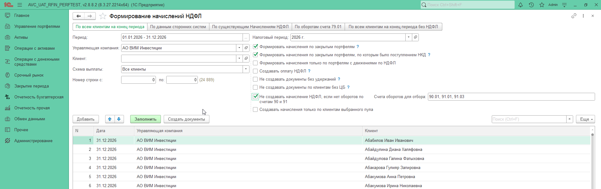
Форма обработки: период 2026, УК АО ВИМ Инвестиции, отсев без оборотов, 24 889 клиентов.
Обнаружен дефект уникальности номера. В логе пачка 11: значение «000000000044095» поля «Номер» не уникально при записи документа УК. После исправления прогон повторили. Итог этого запуска в логе: 0 ошибок, 19.09.2026 19:41 - 20.09.2026 00:04, длительность 302:24.
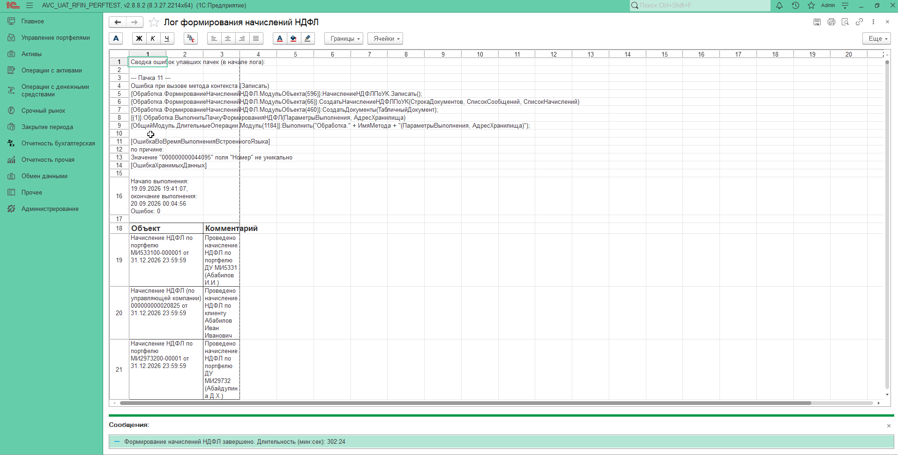
Лог: ошибка уникальности номера, затем сводка «Ошибок: 0».
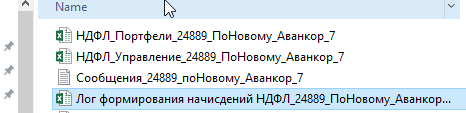
Выгрузки прогона 7: портфели, УК, сообщения, лог.
Шаг 2. Досоздать клиентов без НДФЛ на конец периода - 408
Вкладка «По всем клиентам на конец периода без НДФЛ». На форме 408 строк. Старт 20.09.2026 07:05, финиш 07:11.
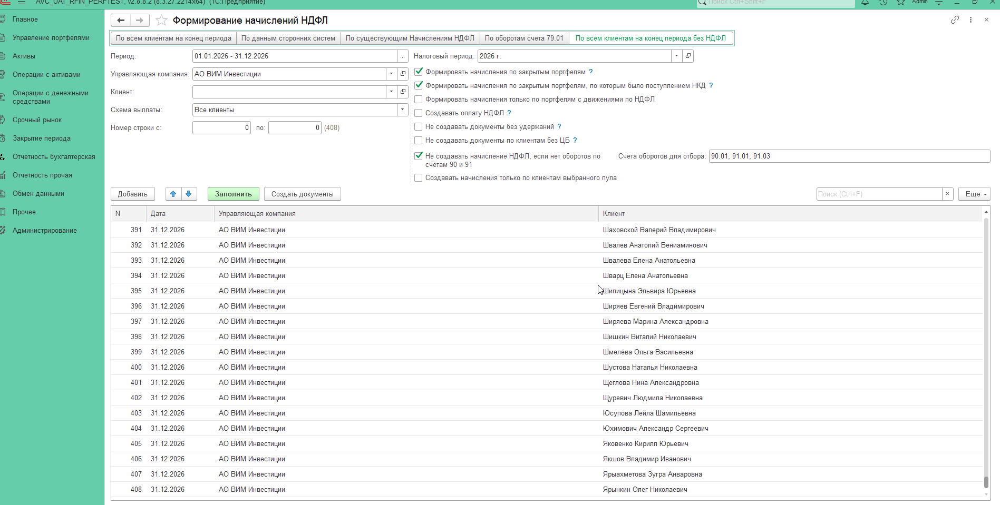
408 клиентов без начисления на конец периода, отсев без оборотов включён.
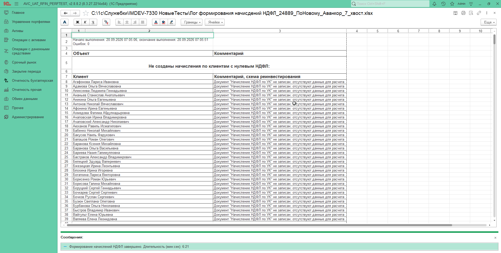
Лог хвоста: 0 ошибок, 6:21. Часть строк - «отсутствуют данные для расчета» (пустой пропуск).
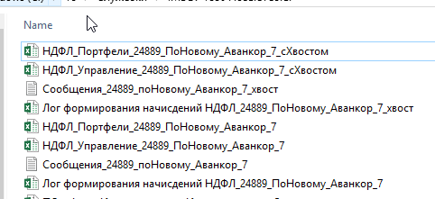
Выгрузки с суффиксом «хвост» рядом с основным прогоном 7.
Шаг 3. Очистить проведенные начисления
Обработка «Отмена проведения начислений НДФЛ», дата документов 31.12.2026, 10 потоков.
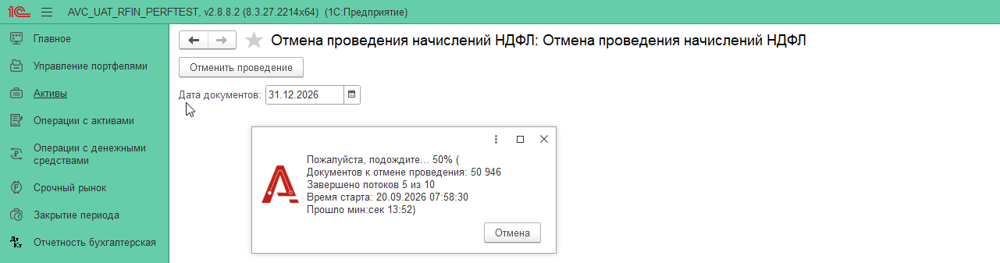
В работе: 50 946 документов к отмене, 5 из 10 потоков.
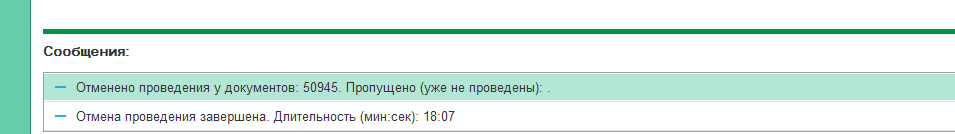
Завершено: отменено 50 945, длительность 18:07.
Шаг 4. Повтор «без доходов» после фикса номера (прогон 8)
Тот же отсев без оборотов, 24 889 строк. Старт 20.09.2026 08:28 (диалог) / лог 09:02 - 13:34, 317:18, ошибок 0.
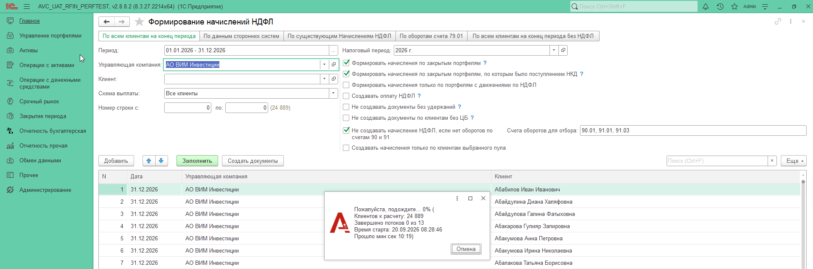
Повторный запуск без доходов, 24 889 клиентов к расчёту.
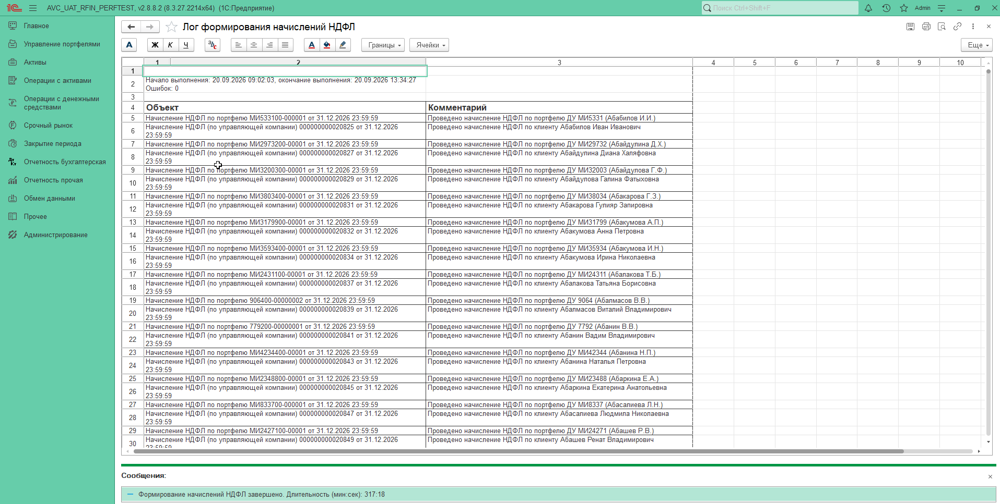
Лог прогона 8: ошибок 0, проведение по УК и по портфелю.
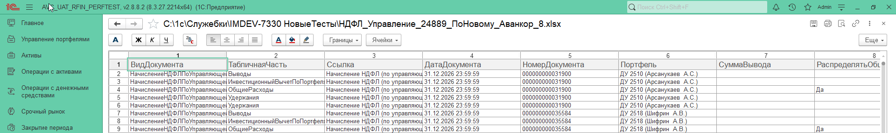
Выгрузка «НДФЛ_Управление» прогона 8.
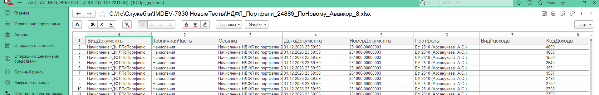
Выгрузка «НДФЛ_Портфели» прогона 8.
Шаг 5. Полный прогон «с доходами» и ПИФ (прогон 9, эталон)
Флаг отсева выключен: «как раньше, все строки», 10 потоков. На форме 27 792 клиента. Лог: 20.09.2026 19:47 - 21.09.2026 02:29, 454:54, ошибок 0.
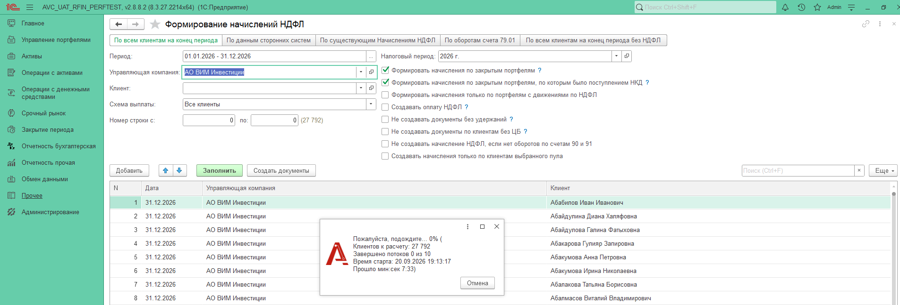
Заполнение без отсева по счетам: 27 792 клиента к расчёту.Лог эталона: ошибок 0, длительность 454:54.
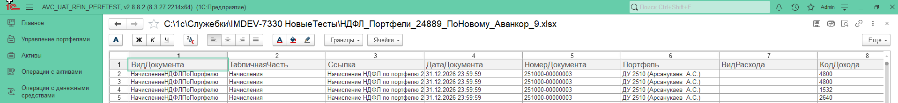
Выгрузка портфелей прогона 9 - база для сверки 10 и 11.
Шаг 6. Сверить 8 и 9, ПИФ и ИИС
Живые документы по портфелю совпали: 25 804 в обоих прогонах, дельта сумм 0. Лишние 2 635 в прогоне 9 - только пустые. По УК: +2 живых (Львов, Баландин) - доход из ПИФ, на 90/91 его нет. После доработки флага «с доходами» они подтягиваются в заполнение.
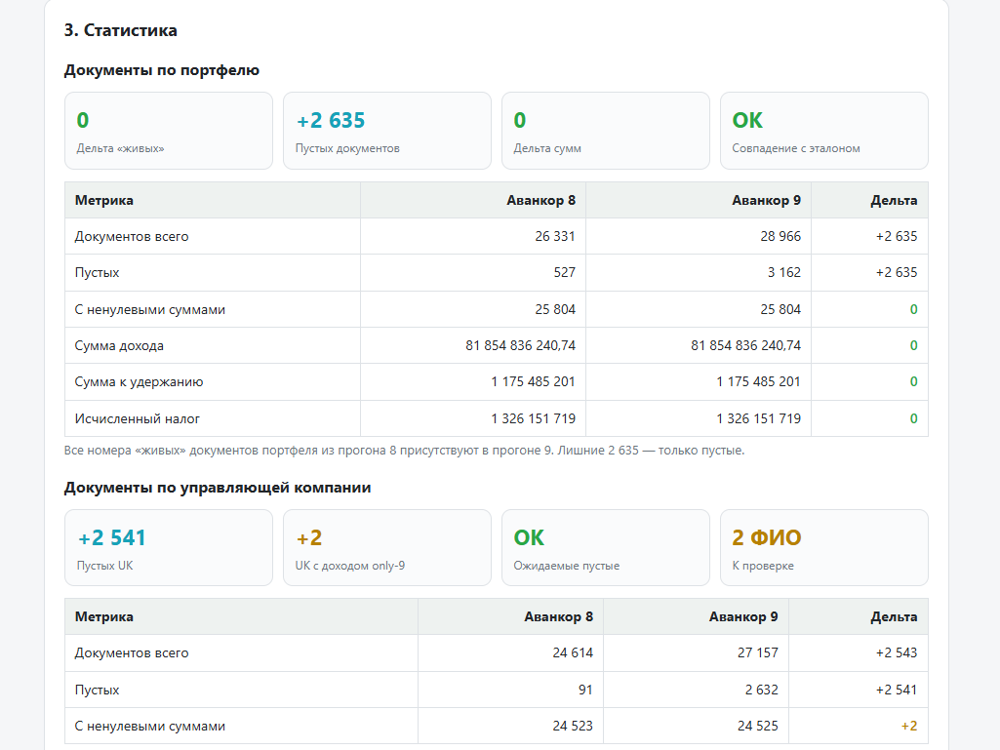
Сверка 8 против 9: живые портфели и суммы - OK, два ФИО к проверке.
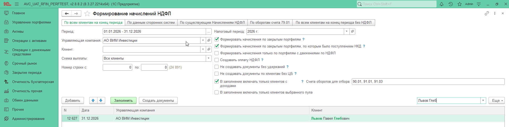
После учёта доходов ПИФ Львов Павел Глебович есть в заполнении (строка 12 627 из 24 891).
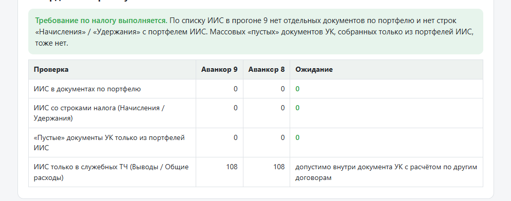
ИИС: отдельных документов по портфелю и строк налога нет. 108 ИИС только в служебных ТЧ внутри документа УК - допустимо.
Шаг 7. Снова очистить контур
Перед срезами по пулу. 21.09.2026 06:09, 56 123 документа к отмене.
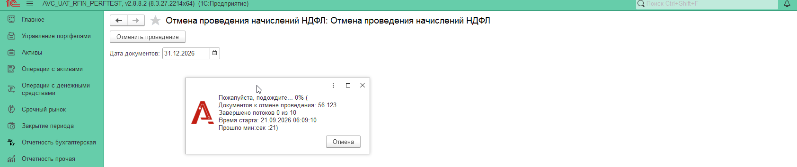
Отмена проведения перед прогонами 10 и 11, дата 31.12.2026.
Шаг 8. Не-РДУ: пул пустой (прогон 10)
Флаги: клиенты с доходами + только выбранный пул, поле пула пустое. На форме 2 208 строк. Старт диалога 21.09.2026 08:32.
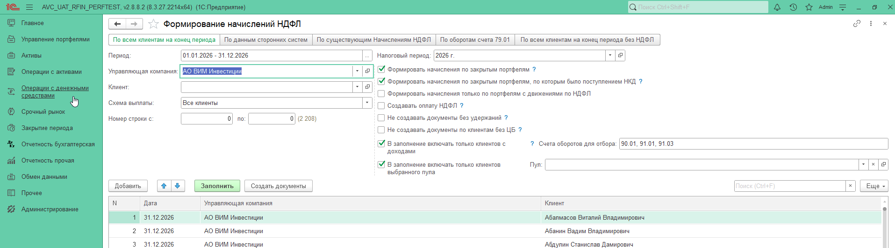
Заполнение не-РДУ: пул пустой, 2 208 клиентов.
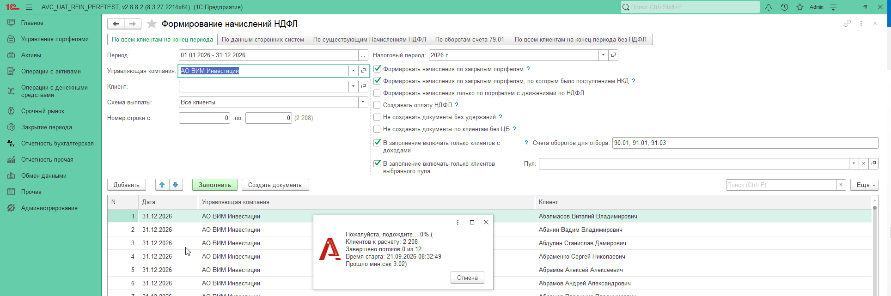
Создание документов не-РДУ, 2 208 к расчёту.
Создано 2 164 УК / 2 747 портфелей. Все живые нашлись в эталоне 9. Единственная дельта сумм - Ивашкин А.Г. (вычет -325,60, к удержанию +49).
Шаг 9. Только РДУ: пул «Розничное ДУ» (прогон 11)
Те же флаги доходов, пул «Розничное ДУ». На форме 22 688 строк. Диалог старта 09:56, лог 10:04 - 14:02, 258:34, ошибок 0. Этот прогон уже без явного менеджера временных таблиц в «ОбщиеОбороты».
Выгрузка портфелей прогона 11 (в том числе ДУ 4749 Петров А.А. - смешанная пара).
Шаг 10. Сверить РДУ с эталоном и смешанные пары
Все 22 457 документов УК прогона 11 есть в прогоне 9 с тем же составом портфелей. Расхождений сумм нет. Львов и Баландин в РДУ нет: у них ДУ с пустым пулом и ПИФ, это не-РДУ.
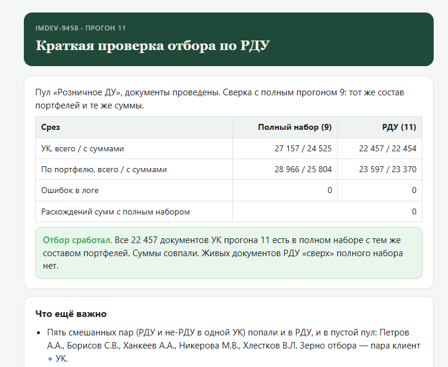
Итог проверки РДУ против полного набора: отбор сработал, сумм-дельт 0.
Пять пар попали и в РДУ, и в пустой пул (зерно клиент+УК): Петров А.А., Борисов С.В., Ханкеев А.А., Никерова М.В., Хлестков В.Л. Пример Борисова: два договора ДУ с разными префиксами.
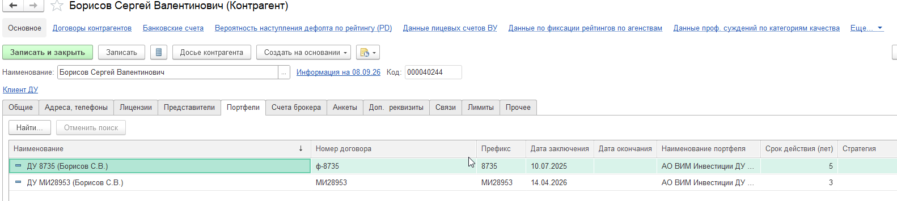
Борисов С.В.: ДУ 8735 и ДУ МИ28953. Разные пулы в одной паре клиент+УК.
5. Выводы
Отборы работают. Эталон держится.
Пять задач Аванкору подтверждены на базовой 2.8.8.2 и расширении 1.0.0.11. Список после «Заполнить» стал управляемым. Расчёт налога не сдвинулся.
0ошибок в логах 8, 9, 10 и 11
9полный эталон: 27 157 УК, 7,5 часа
11РДУ совпал с эталоном по суммам
Доход
Пустых отсекли. ПИФ оставили.
Счета 90.01, 91.01, 91.03 убирают пары без оборотов. Доход из ПИФ пару сохраняет: Львов и Баландин вошли в прогон 9.
Номер
Коллизию закрыли с первого исправления.
Прогон 7 упал на неуникальном номере УК. После повтора записи прогон 8 прошёл чисто.
Пул
РДУ - точное подмножество полного набора.
Прогон 11 без явного МВТ. Живые документы и суммы совпали с 9. Пять смешанных пар в обоих пулах - зерно клиент + УК, не ошибка.
ИИС
Отдельного налога по ИИС нет.
Нет документов по портфелю ИИС и нет строк начисления. Служебные ТЧ внутри документа УК допустимы.